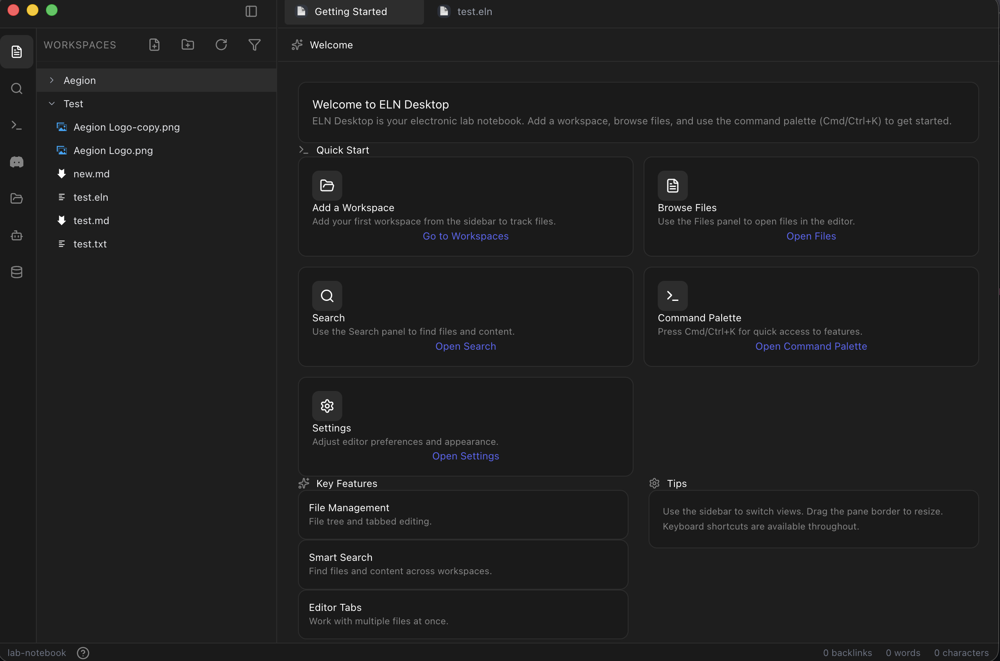
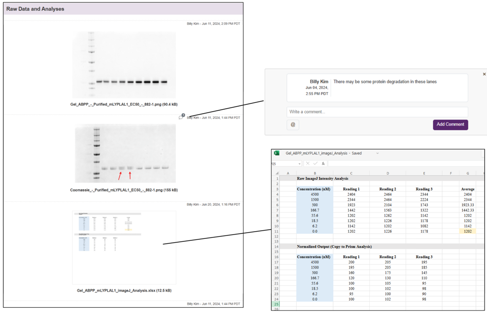
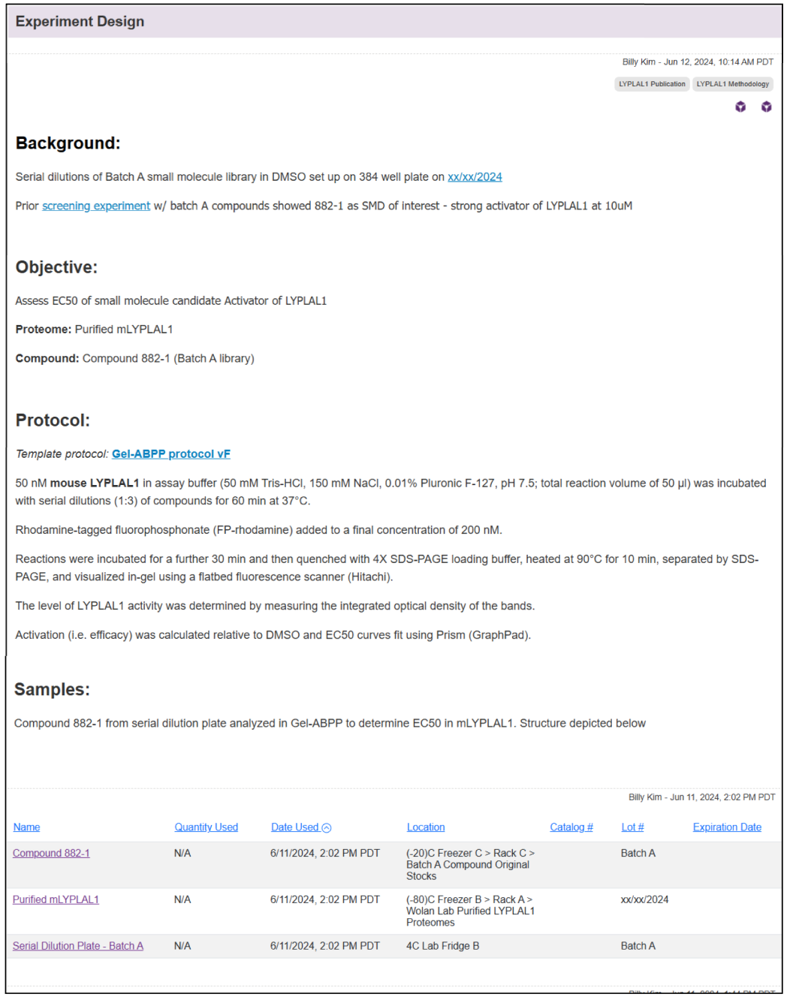

Start Here
Aegion Dynamic: https://aegiondynamic.com
This book is the open source ecosystem contributor guide for Pegasus, an open standard Electronic Lab Notebook (ELN) system. It sets context for ELNs and AI in life sciences, explains the ELN open standard, and supports hackathon participants and implementers building on Pegasus.
Who this is for
- Ecosystem contributors — anyone extending or integrating with Pegasus
- Hackathon and buildathon participants — teams building AI modules, plugins, or tools that use ELN data
- Implementers — developers adopting the open standard or building compatible tools
Pegasus overview
The Pegasus ELN desktop app uses an IDE-like layout: a left sidebar for navigation and file management, and a main area for editing and viewing content. The welcome screen helps you get started; once you add workspaces, you'll use the same layout for your lab notebooks.

Main elements:
- File Pane — The WORKSPACES section in the left sidebar. It shows a hierarchical file tree of your projects and files (e.g. folders,
.elnnotebooks,.md, images). Use it to open files, organize projects, and track what you're working on. - Agents — Accessed via the sidebar (e.g. the person/assistant icon). Agents help you work with your notebook content using AI—search, summarization, or task automation from within the app.
- Knowledge Index — The stacked-documents/database icon in the sidebar. It indexes your workspace content so you can search across files and use that context with agents and smart search.
- Command Palette — Press Cmd/Ctrl+K (or use the "Open Command Palette" option) for quick access to features and commands without hunting through menus.
- Workspace Management — Add and switch between workspaces from the sidebar. Each workspace is a root folder (e.g. a project or lab); the file tree under WORKSPACES reflects the files in the active workspace. Use "Add a Workspace" to track your first (or additional) project folders.
How to use this book
| Chapter | What you'll find |
|---|---|
| 1. ELNs and AI in Life Sciences | Context and hackathon ideas: what ELNs are, how they're used, and AI opportunities. |
| 2. The ELN Open Standard | XML spec, primitives, API: root structure, metadata, content, tables, protocols (LabOP), knowledge graph, audit. |
| 3. ELNs at Work | How life-science practitioners use ELNs day-to-day (planning, recording, data management, inventory, instruments, collaboration, compliance, knowledge management, integration, project management). |
| 4. Hackathon Guide | Workflows, data types, AI extension ideas, and what buildathon judges look for. |
| 5. Pegasus API | API reference for building on Pegasus (TBA). |
| 6. Inspirations and Learning | Creators, tracks, and patterns from the ecosystem (ELN tutorials, research workflows, open science, Jupyter/Git). |
| 7. Idea Bank: BioProtocol and Decentralized Science | In-depth coverage of open protocols, DeSci, and reproducibility; integrating with Pegasus. |
| 8. Idea Bank: LabOP | In-depth coverage of the LabOP protocol standard and how it fits with the Pegasus ELN. |
What buildathon judges care about
When evaluating projects, judges score five areas (substance over polish; evidence required):
- Scientific utility (30%) — Solves real researcher pain points (e.g. reproducibility, provenance).
- Local-first (25%) — Offline-capable; data stays on the researcher's machine; local models (e.g. Ollama).
- Open standards (20%) — Correct use of Pegasus data formats and local API (see Chapter 2 and Pegasus API).
- Extensibility (15%) — Others can build on or extend the project; clear structure and docs.
- Creativity (10%) — Novel use of AI/ML with notebook data.
Weighted total (max 5.0): 4.2+ winning, 3.8–4.1 strong finalist, <3.0 participation. Details are in the Hackathon Guide.
I want to...
- Understand ELNs and get hackathon ideas → Start with Chapter 1.
- Implement the standard or build on the API → Go to Chapter 2.
- Prepare for the hackathon → Read Chapters 3–4 (ELNs at Work, Hackathon Guide) and the evaluation notes there; then Chapters 6–8 (Inspirations, Idea Banks).
- Explore idea banks → See Chapter 7 (BioProtocol / DeSci) and Chapter 8 (LabOP).
© Aegion Dynamic. See Copyright and Legal Notice for full terms and repository information.
ELNs and AI in Life Sciences
This book is the open source ecosystem contributor guide for Pegasus, an open standard Electronic Lab Notebook (ELN) system. This chapter sets the context for ELNs and AI in life sciences.
What are Electronic Lab Notebooks?
An electronic lab notebook (ELN) is a digital software tool that replaces traditional paper notebooks for recording research. It provides a structured, secure way to document experiments, protocols, observations, and results. ELNs allow researchers to enter text and attach rich data in digital form (e.g. images, graphs, raw data files), and often include templates or forms to standardize entries. Unlike paper notebooks, ELNs make all content searchable and version-controlled. They can be synced with other lab software (like sample inventories or LIMS) and maintain tamper-proof audit trails. In short, an ELN is a modern, searchable laboratory journal that captures everything about an experiment in one place.
ELNs offer many advantages over paper. They simplify data sharing and backup, since entries are stored digitally. For example, experiments recorded in ELNs are easier to search by keyword or date. Lab notebooks can include fine-grained access controls and audit logs, so every change is tracked. Importantly, ELNs can directly import digital data from instruments (instead of printing and stapling). In practice, a scientist can upload microscope images, sensor readouts, or spreadsheet results right into the experiment record. Multiple users can collaborate on the same notebook, tagging each other's work and commenting on entries. These features make ELNs a centralized hub for research data and improve reproducibility by keeping protocols, data and analysis together.
How ELNs are Used in Life Sciences
In biology and chemistry labs, ELNs serve as the daily research workspace. Scientists plan and record experiments by writing down protocols (materials, methods, objectives) and then logging real-time observations and data. For example, a researcher might write the background and step-by-step procedure for a gel experiment, and then enter gel image results once the run is finished. All digital outputs (images of gels or cells, instrument plots, calculations in spreadsheets) are attached to the relevant experiment page. Because the data are structured, teams can quickly compare experiments, spot trends or anomalies over time, and ensure nothing is lost. On any given day, a user might create a new notebook entry, paste in the experimental procedure, type or voice-record observations, upload photos or CSV files, and later compile results and conclusions in one section. ELNs also support cross-linking: one entry can link to previous related experiments, or to inventory entries listing specific samples and reagents used.
Undergraduates and lab technicians likewise use ELNs to follow standard templates for their experiments. Instead of writing in paper binders, a student can use an ELN "page" to fill in observed values, snap a photo of a reading, or paste in an output graph. This encourages good lab practices from the start and makes it easy to later retrieve their data. In academic research, ELNs help disparate teams share methods and results, even across institutions. For instance, one group's ELN entry on a cell culture protocol can be copied and reused by another group, with full provenance and updates tracked. By centralizing all experiment details (from methods to raw data), ELNs improve collaboration and compliance: nothing is hidden in filed notes, and supervisors can audit progress in real time.
Different Types of Data in an ELN
ELNs can store many kinds of research data in one place. Typical content includes:
-
Textual notes and protocols: Experiment descriptions, procedures, and conclusions are written as rich text entries. Researchers may write protocols in the notebook or attach documents, then record step-by-step methods and observations.
-
Images and media: Photographs of experimental setups, microscope images, electrophoresis gels, or spectra are uploaded directly. Images can be annotated (e.g. marking features on a photo). ELNs even allow uploading photos taken on mobile devices during the experiment.
-
Data files and tables: Numerical data often come as spreadsheets, CSV files, or instrument outputs. These raw data files can be attached to the entry. For example, an ELN page might include an Excel file of measurements and a MATLAB graph, stored and even viewable inside the notebook. Because ELNs are digital, they can host large raw datasets without physical limits.
-
Metadata and links: Entries automatically include metadata like timestamps and authorship. Scientists can also tag entries or link to related pages (e.g. linking this week's experiment to a prior one). Many ELNs integrate with inventory/sample databases: entering a sample ID can record that sample in the notebook and link back to its database record.
-
Graphs and analysis results: Final results (charts, plots, statistical analyses) are saved as figures or PDFs attached to the entry. An ELN can also embed interactive elements (e.g. live links to analysis scripts or editable spreadsheets).
An example ELN page organized into sections: Methodology (green), Raw Data/Analysis (blue), and Results (red). This illustrates how an experiment record might be structured with text and attachments. ELNs let researchers upload spreadsheets or image files to each section (for calculations or figures) and tag entries by type or project.

Figure: An example ELN page organized into sections (Methodology, Raw Data/Analysis, Results).
ELNs support uploading images and time-stamped notes directly from the lab. For instance, one can take a photo of a gel or experimental apparatus and insert it into the "Observations" section. ELNs allow direct incorporation of instrument data and images into entries, and users can even use mobile apps to capture handwritten notes or photos during an experiment.
Raw data (gels, spectra, spreadsheets) can be attached to ELN pages. In the example below, a gel image and an Excel calculation file are shown. ELNs make it easy to review and comment on raw data in context. Research shows that ELN entries often contain sections for uploading raw data or analysis files (images, Office files, etc.) which can then be annotated or processed within the ELN.

Figure: Raw data (e.g. gel image, spreadsheet) attached to an ELN page.
Protocols and experimental design details are also stored in the notebook. The figure below shows a section of an ELN entry with the experiment's Background, Objective, and Protocol steps. Protocols are typically written as rich text or document attachments in an ELN. Some systems link this protocol to inventory lists of reagents and samples, ensuring every material used is tracked.

Figure: Protocols and experimental design in an ELN entry.
Experimental design—hypotheses, variables, conditions, and how an experiment is structured—can also be captured in the notebook. The figure below shows how design elements are recorded alongside protocols, so that the rationale and plan for each experiment are preserved and searchable.

Figure: Experiment design (objectives, variables, conditions) in an ELN.
AI & Lab Notebooks: Hackathon Ideas
The following ideas leverage the open, local architecture of the Pegasus ELN and can inspire ecosystem contributions and hackathon projects.
Open Standards & FAIR Data
Pegasus ELN uses open data formats and APIs. Hackathon teams can leverage these by building AI "skills" or parsers that read the JSON/CSV exports of notebook entries. Ensuring data follows FAIR principles (with metadata tags and persistent IDs) makes it easier for AI tools to interpret. Because the ELN is open-source, anyone can extend it or contribute plugins. For example, one project might write a module that scans the ELN JSON to extract a timeline of reagent usage, or validates entries against a standard template.
Local LLM Integration
Use local large language model frameworks (like Ollama or LangChain) to connect an LLM with the notebook data. For instance, teams could use OpenClaw (formerly Moltbot), an open-source AI agent, to create a lab assistant that "reads" your ELN. OpenClaw runs locally and can execute tasks on your machine. A hackathon challenge could be: "Build an OpenClaw-style agent that answers questions like 'What was the protocol for Experiment 7?' or 'Plot the time series of pH readings' by querying the ELN." Because everything is local, data never leaves the machine. This is similar to ELNs already embedding AI chat assistants for scientists.
ML/AI for Data Analysis
Apply machine learning to common life-science datasets in the ELN. Ideas include training a CNN to classify cell images attached in notebook entries, using NLP to automatically summarize an experiment's results from the notes, or applying anomaly detection on time-course data. Since ELNs structure data across experiments, teams can aggregate past entries to train models. For example, having structured experiment data lets teams "identify trends, anomalies, and performance metrics across projects over time." A concrete project could use existing ELN data to predict the outcome of a procedure or to flag inconsistent entries.
Interactive Knowledge Graphs
Create a knowledge graph that links items in the notebook: nodes could represent experiments, samples, genes, chemicals, etc., and edges capture relationships (e.g. "sample X was used in experiment Y"). The graph could be visualized or queried interactively. In life sciences, such graphs are powerful: they've been used to prioritize disease-related genes, suggest drug repurposing opportunities, or find new drug-target interactions. For a hackathon, a team might build a graph that automatically ingests the ELN's metadata and creates an interactive explorer, helping scientists ask questions like "Which experiments used Compound A?" or "Which samples relate to a given cell line?"
AI Agents for Lab Workflows
Inspired by the OpenClaw example, teams can design an AI workflow manager. For example, an agent could monitor the ELN API and trigger alerts or actions: if the agent reads a note about a long incubation, it might schedule a reminder; or if it detects missing data, it could prompt the user. By integrating with messaging apps, the agent could allow voice or chat interaction ("Hey AI, summarize yesterday's chromatography run"). Essentially, this is an extension of a chatbot assistant tailored to scientific workflows.
Open/Distributed Science
Explore connecting ELN data to open science platforms. One idea is to integrate with Bio Protocol (BIO) – a blockchain-based DeSci platform where research can be shared and tokenized. A hackathon task could be to design a way to "publish" parts of a lab notebook onto a decentralized network (e.g. save a protocol with a persistent identifier). Teams could also consider the ethos of open-notebook science, where all data (even failed experiments) are made public in real time. For example, a project could sync select ELN entries to a public repository or wiki, enabling community feedback and distributed collaboration. This connects lab work with broader citizen science and open-data movements.
Each of these ideas leverages the open, local architecture of the Pegasus ELN. Because the system's data format and API are open, contributors can freely build custom AI modules, chatbots, or graph tools that plug into the notebook. By drawing inspiration from OpenClaw/Moltbot agents, FAIR data principles, and decentralized science platforms, participants can create novel AI-powered features for life-science research. The goal is to spark creativity: for instance, one team might develop an LLM "protocol advisor," another might make an image-analysis plug-in, while another builds a knowledge-graph front-end for the lab. All of these would showcase how AI can enhance the functionality of an electronic lab notebook in a modern research setting.
References and further reading
- What Is an Electronic Lab Notebook? | LabKey
- Ten simple rules for implementing electronic lab notebooks (ELNs) - PMC
- Electronic lab notebook - Wikipedia
- Example Notebook Page - Recording an Experiment – LabArchives
- The Big Picture of Data Management in an Electronic Lab Notebook (ELN) - Research Data Services
- OpenClaw is an open-source AI agent that runs your computer | Scientific American
- Constructing knowledge graphs and their biomedical applications - PMC
- Bio Protocol (BIO) – Help Centre
- Open-notebook science - Wikipedia
© Aegion Dynamic. See Copyright and Legal Notice for full terms and repository information.
The ELN Open Standard
This chapter describes the XML-based Electronic Lab Notebook (ELN) standard that underpins Pegasus and compatible tools. It provides structured scientific documentation, addressable data, protocol interoperability, and semantic extensibility while remaining machine-readable, AI-compatible, and tool-agnostic. A dedicated Pegasus API chapter (TBA) will document the local API and endpoints for reading and writing this data.
1. Overview
This ELN XML standard is designed to provide:
- Structured scientific documentation
- Rich text + Markdown + LaTeX support
- Addressable tabular data
- Protocol embedding via LabOP
- Knowledge graph construction
- Deep linking & cross-notebook references
- Embeddable web content
- Workflow triggers
- Audit and compliance support
All resources are addressable using URI or URN identifiers.
2. Root Structure
<notebook id="urn:lab:notebook:assay-2026-01">
<metadata>...</metadata>
<layout>...</layout>
<content>...</content>
<interfaces>...</interfaces>
<knowledge>...</knowledge>
</notebook>
3. Metadata Section
Stores high-level notebook information.
<metadata>
<title>Antibiotic Susceptibility Assay</title>
<created>2026-02-01T09:30:00Z</created>
<author>Dr. A. Raman</author>
<tags>microbiology,assay,phase1</tags>
</metadata>
Supported Concepts
- Versioning (optional extension)
- Access classification
- Audit metadata
4. Layout Section
Separates layout concerns from content.
<layout>
<position container="urn:lab:container:intro" x="0" y="0" width="12" height="4"/>
<position container="urn:lab:container:data" x="0" y="5" width="12" height="8"/>
</layout>
This enables:
- Grid-based rendering
- PDF export formatting
- Dashboard-style layouts
5. Content Section
The heart of the notebook.
<content>
<container id="urn:lab:container:intro" type="text">
<element format="markdown"><![CDATA[
# Objective
Test bacterial resistance to **Ampicillin**.
Formula used:
$$
OD_{corrected} = OD_{sample} - OD_{blank}
$$
]]></element>
</container>
</content>
5.1 Text Formats
Supported via:
<element format="plain|markdown|latex|html|code">
Example (LaTeX):
<element format="latex">
\int_0^\infty e^{-x^2} dx = \frac{\sqrt{\pi}}{2}
</element>
6. Addressable Tables
Tables support row-level primary keys.
<container id="urn:lab:container:results" type="table">
<table id="urn:lab:table:assay-results" label="Assay Data">
<header>
<cell>Sample</cell>
<cell>OD600</cell>
<cell>Replicate</cell>
</header>
<row id="urn:lab:row:sample-001">
<cell>Sample-001</cell>
<cell>0.87</cell>
<cell>1</cell>
</row>
<row id="urn:lab:row:sample-002">
<cell>Sample-002</cell>
<cell>0.91</cell>
<cell>1</cell>
</row>
</table>
</container>
Linking to a Specific Row
<link
type="internal"
target="urn:lab:table:assay-results"
fragment="urn:lab:row:sample-001"
label="Sample 001 Data"/>
7. Embeddable Content
Supports iframe-like rendering.
<embed
type="iframe"
src="https://plotly.com/~lab/123"
width="800"
height="600"
sandbox="allow-scripts allow-same-origin"
allowfullscreen="true"/>
Use cases:
- Interactive plots
- Remote dashboards
- Computational notebooks
8. Protocol Support (LabOP)
Protocols are embedded verbatim.
<protocol id="urn:lab:protocol:ampicillin-test" title="Ampicillin MIC" version="1.0">
<labop format="json-ld" schema="https://labop.org/schema">
{
"@type": "Protocol",
"name": "Ampicillin MIC Test",
"steps": [
{ "description": "Prepare bacterial culture" },
{ "description": "Add antibiotic gradient" }
]
}
</labop>
</protocol>
9. Measurements & Instrument Data
<measurement
id="urn:lab:measurement:od600-001"
parameterRef="urn:lab:param:od600"
value="0.87"
unit="OD"/>
<spectrum
id="urn:lab:spectrum:uvvis-001"
type="UV-Vis"
dataRef="urn:lab:file:uvvis-data.csv"/>
10. Action Triggers
Used to launch external scripts or automation.
<action
id="urn:lab:action:export"
label="Export Results"
trigger="manual"
method="POST"
uri="https://lab-system/export"
format="application/json"/>
Permissions are managed externally by the calling tool.
11. Interfaces Section
For cross-document linking.
<interfaces>
<link
type="external"
target="urn:lab:notebook:previous-study"
label="Previous Study"/>
</interfaces>
Supports:
- Cross-notebook linking
- LIMS references
- DOI references
12. Knowledge Graph
Enables structured scientific reasoning.
<knowledge>
<triple
subject="urn:lab:row:sample-001"
predicate="urn:ontology:hasResistance"
object="urn:lab:compound:ampicillin"/>
</knowledge>
Enables:
- Semantic queries
- Automated reasoning
- AI-assisted analysis
13. Audit & Compliance
<auditTrail
id="urn:lab:audit:entry-1"
user="dr.raman"
action="edit"
timestamp="2026-02-01T10:00:00Z"/>
<signature
id="urn:lab:signature:approval"
signerRef="urn:user:dr.raman"
role="PI"
reason="Final Approval"/>
Supports:
- 21 CFR Part 11 compliance
- Traceability
- Regulatory review
14. URI/URN Design Rules
Recommended pattern:
urn:lab:{type}:{identifier}
Examples:
urn:lab:notebook:assay-2026-01
urn:lab:container:results
urn:lab:table:assay-results
urn:lab:row:sample-001
urn:lab:measurement:od600-001
Benefits:
- Globally unique
- Deep-linkable
- Semantic-friendly
15. Design Philosophy
| Principle | Implementation |
|---|---|
| Separation of layout & content | <layout> vs <content> |
| Semantic addressability | URI/URN-based IDs |
| Extensibility | Choice-based schema |
| AI readiness | RDF-style triples |
| Protocol standardization | LabOP embedding |
| Web-native | iframe embedding |
| Tool-agnostic security | Auth externalized |
16. Complete Minimal Example
<notebook id="urn:lab:notebook:demo">
<metadata>
<title>Demo Notebook</title>
<created>2026-02-19T12:00:00Z</created>
<author>Dr. X</author>
</metadata>
<layout>
<position container="urn:lab:container:main" x="0" y="0" width="12" height="6"/>
</layout>
<content>
<container id="urn:lab:container:main">
<element format="markdown">
<![CDATA[
## Demo Entry
This notebook supports Markdown and LaTeX:
$$E = mc^2$$
]]>
</element>
</container>
</content>
<interfaces/>
<knowledge/>
</notebook>
Conclusion
This ELN XML standard provides:
- Structured scientific documentation
- Addressable data primitives
- Protocol interoperability
- Semantic extensibility
- Automation hooks
- Web-native rendering
- Regulatory readiness
It is designed to be:
- Machine-readable
- AI-compatible
- Long-term archival safe
- Tool-agnostic
Possible next steps for the ecosystem include a JSON representation of the standard, a validation checklist for implementers, a compliance mapping (e.g., FDA / ISO), and a versioned governance model for evolving the standard.
© Aegion Dynamic. See Copyright and Legal Notice for full terms and repository information.
ELNs at Work
Electronic Lab Notebooks are not just digital Word documents. They function as operational systems for scientific workflows, bridging experimental planning, execution, data capture, and collaboration.
Below are the core operational areas where ELNs are used in real laboratories.
Experimental Planning and Protocol Management
What scientists do
- Write step-by-step experimental protocols (e.g., PCR, microscopy imaging, cell culture).
- Create templates for common procedures (SOPs).
- Version-control protocols when methods change.
Why ELNs matter
- Ensures reproducibility: everyone in the lab follows the same procedure.
- Allows teams to compare how protocol changes affect results.
- Central repository prevents "tribal knowledge" loss when students leave.
Typical ELN content
- Structured protocol steps
- Materials lists
- Timing parameters
- Safety notes
- Attachments (PDFs, images, instrument settings)
Recording Experimental Observations and Results
What scientists do
- Log daily experimental notes ("lab journal entries").
- Capture raw observations: unexpected results, contamination, anomalies.
- Attach data files and images from instruments.
Why ELNs matter
- Prevents transcription errors and lost notebooks.
- Enables search across years of experiments.
- Creates structured provenance of scientific work.
Typical ELN content
- Free-text notes
- Structured measurements
- Instrument outputs (CSV, microscopy images, spectra)
- Metadata (temperature, reagent batch, timestamps)
Data Management and Result Curation
What scientists do
- Tag key findings.
- Compare experiments across time.
- Track experiment lineage ("this result came from this sample using this protocol").
Why ELNs matter
- Enables trend discovery across experiments.
- Facilitates project retrospectives and scientific reporting.
- Helps supervisors review student progress.
Typical ELN content
- Experiment graphs and summary tables
- Tags (e.g., "failed", "optimized", "publishable")
- Links between experiments and datasets
Sample and Inventory Tracking
What scientists do
- Track biological samples, chemicals, reagents, antibodies, DNA plasmids, cell lines.
- Monitor storage locations (freezers, racks, plates).
- Track batch numbers and expiry dates.
Why ELNs matter
- Prevents wasted reagents and mislabeled samples.
- Ensures traceability for regulatory and reproducibility requirements.
- Links experimental results to specific reagent lots.
Typical ELN content
- Sample IDs and lineage
- Storage location metadata
- Barcode IDs
- Quantity usage logs
Instrument and Automation Integration
What scientists do
- Connect ELNs to instruments (sequencers, microscopes, spectrometers).
- Automatically ingest machine outputs.
- Log machine settings.
Why ELNs matter
- Eliminates manual copying of results.
- Ensures provenance of computational pipelines.
- Enables automation and robotics workflows.
Typical ELN content
- Raw instrument output files
- Instrument configuration metadata
- Run logs
Collaboration and Team Coordination
What scientists do
- Share experiment records with collaborators.
- Comment and review experiments.
- Assign tasks and track progress.
Why ELNs matter
- Supports distributed teams and remote collaboration.
- Supervisors can review student lab work in real time.
- Reduces version conflicts and email chaos.
Typical ELN content
- User comments and annotations
- Task assignments
- Project dashboards
Regulatory Compliance and Audit Trails (Industry & Clinical Labs)
What scientists do
- Sign off on experiments.
- Maintain immutable audit logs.
- Export documentation for regulators.
Why ELNs matter
- Required for pharma, clinical, and manufacturing research (GLP, GMP, ISO).
- Ensures data integrity and legal traceability.
- Prevents fraud or data tampering.
Typical ELN content
- Electronic signatures
- Time-stamped logs
- Access control metadata
Knowledge Management and Institutional Memory
What scientists do
- Store historical experiments and institutional protocols.
- Search across years of research.
- Train new lab members using past notebooks.
Why ELNs matter
- Prevents knowledge loss when researchers graduate.
- Enables longitudinal research analysis.
- Creates searchable scientific memory for an institution.
Typical ELN content
- Long-term project archives
- Training protocols
- Historical datasets
Integration with Broader Research Systems (LIMS, Data Lakes, Publications)
What scientists do
- Sync ELNs with:
- LIMS (Laboratory Information Management Systems)
- Data repositories
- Publication pipelines
- Export data for papers and patents.
Why ELNs matter
- Supports FAIR data principles (Findable, Accessible, Interoperable, Reusable).
- Bridges wet-lab work with computational pipelines.
Typical ELN content
- Metadata exports
- API connections
- Dataset packages
Project Management for Research Programs
What scientists do
- Track milestones in multi-month experiments.
- Manage multi-experiment research programs.
- Coordinate interdisciplinary projects (biology + chemistry + ML).
Why ELNs matter
- Makes research programs observable like software projects.
- Helps principal investigators manage multiple students and experiments.
Typical ELN content
- Project timelines
- Experiment hierarchies
- Milestone markers
Key Insight for Hackathon Participants
An ELN is not just a notebook. It is:
- A scientific data lake
- A provenance system
- A workflow engine
- A collaboration platform
- A regulatory artifact
- A knowledge graph substrate
This makes it an extremely rich target for AI plugins.
Hackathon-Relevant AI Opportunities from These Usage Areas
AI for Experimental Understanding
- Summarize daily lab logs into weekly reports.
- Detect anomalies in experiment logs.
AI for Protocol Intelligence
- Auto-generate protocol drafts from natural language goals.
- Compare protocol versions and predict outcomes.
AI for Sample Intelligence
- Detect missing metadata.
- Recommend reagent substitutions.
AI for Instrument Data
- Auto-annotate raw machine data with experiment context.
- Build semantic indexing of datasets.
AI for Collaboration
- Conversational assistants that answer: "What did we try last month on this cell line?"
AI for Compliance
- Flag missing signatures or documentation gaps.
AI for Knowledge Graphs
- Build experiment-sample-protocol-result graphs.
- Enable graph queries and visualization.
Positioning for Pegasus
Pegasus is a local-first, open-standard ELN platform that exposes this scientific operational data via a local API. This buildathon invites participants to explore how AI systems can interact with structured scientific workflows, build intelligent assistants, and create new interfaces for distributed scientific knowledge.
© Aegion Dynamic. See Copyright and Legal Notice for full terms and repository information.
Hackathon Guide
Electronic Lab Notebooks (ELNs) are software tools that replicate the traditional paper notebooks scientists use to record experiments. An ELN lets a researcher enter protocols (step-by-step methods), observations, notes, and data on a computer or tablet. These digital lab notebooks make experiment records easy to search, share, and back up. ELNs allow scientists to access, search, and share results from an experiment, offering advantages like data security, auditing, and collaboration over analog notebooks. In practice, ELNs often include time stamps and access controls, so each entry is tracked and legally traceable, just like a paper lab notebook.
How ELNs are used in life sciences
In biology, chemistry and biomedical labs, ELNs are used every day to plan, run, and document experiments. A typical workflow might look like:
- Planning an experiment: The scientist writes the objective and detailed procedure (the "protocol") in the ELN. This can include listing reagents, equipment, and expected outcomes.
- Recording results: As the experiment proceeds, the researcher enters observations (e.g. color changes, measurements) and data (tables of values, spectra, etc.) into the notebook. They can also attach images (microscope pictures, gel photos) or instrument output files directly to the entry.
- Inventory and resources: ELNs often link to inventories of samples and reagents. Lab members note which chemicals or biological samples they used, helping track inventory and avoid waste. Some systems even record equipment calibrations or maintenance.
- Analysis and conclusions: After finishing the experiment, scientists can use the ELN to analyze data (plotting graphs, computing results) and write conclusions. For instance, one lab's Notion-based ELN has a section for conclusions and even offers an AI-assisted draft to overcome writer's block.
- Collaboration and review: ELNs make it easy to share work with teammates. Colleagues can be assigned to review an experiment entry (e.g. a status field "In Review" prompts a peer check). Because entries are digital, others can search previous experiments or comment asynchronously, greatly improving communication. ELNs support the FAIR principles (making data Findable, Accessible, Interoperable, Reusable) and allow oversight by PIs, which paper notebooks cannot.
In summary, an ELN in a life-science lab becomes the central record of everything: from experimental goals and protocols, through raw data and images, to final results and interpretations. Modern ELNs may also integrate with lab instruments, automatically importing measurements instead of printing them out by hand.
Data types in a lab notebook
A lab notebook entry can contain many kinds of data, often more than on paper. Common data types include:
- Structured data: Numeric or tabular data already in a standard format (e.g. a spreadsheet of absorbance readings, a CSV file of instrument results). Structured data is easy to parse automatically.
- Unstructured data: Free-form content that needs processing. Examples: photographs (e.g. of cell cultures or gels), microscopy images, handwritten notes (if scanned), graphs, maps, and sequence data. A lab notebook might include raw photos of a gel or an X-ray crystallography image. These require digitization or AI tools to interpret. Any handwritten observations or printed reports fall under unstructured data as well.
- Semi-structured data: A mix of both. For instance, a scanned instrument printout with metadata (time, sample ID) is semi-structured – the numbers are structured but still need context. Similarly, a table of PCR cycle data with attached notes is semi-structured: it's tabular data plus descriptive tags. Semi-structured data has some metadata (e.g. experiment date, sample name) that can help make sense of it.
- Attachments and multimedia: ELNs can store any file type. Common attachments include charts and plots (graphs of experimental results), raw data files (CSV, Excel, or proprietary instrument files), PDFs of articles or reports, and chemical diagrams (drawings of molecular structures). For biological labs, this could also include DNA sequence files or images from sequence alignments.
- Protocol and method text: The detailed written protocol itself (often copied from published sources or standardized methods) lives in text form. This may be entered as structured fields (e.g. steps in a checklist) or free-form text, and it can be linked to resources like reagent data sheets or literature references.
In essence, the ELN captures everything about an experiment: the narrative text, the quantitative measurements, and any supporting media. Modern data management views this as the "central repository of facts, statistics, results, and other project information," integrating experimental methods, raw data, and metadata.
Ideas for AI extensions and projects
Since Pegasus uses open standards and provides a local API, it's ideal for building AI plugins. Here are some seed ideas and inspiration.
Open Data & Interoperability
Ensure that experimental data is exported in open, machine-readable formats (e.g. CSV, JSON, RO-Crate packages). Relying on proprietary formats risks vendor lock-in. Pegasus's open-standard approach means all notebook data (text, tables, images, metadata) can be parsed by any tool. Hackathon modules should leverage this – for example, define a clear JSON schema for experiment entries or use community standards (like the ELN Consortium file format). This makes it easy for an AI to read any experiment's data or to write back a report or summary.
Local AI Integration (Ollama, Local LLMs)
Pegasus runs on the local desktop, just like tools such as Ollama allow running LLMs on-premise. Ollama exposes a chat API endpoint on the local machine. A hackathon project could connect Pegasus to a local LLM via Ollama: for instance, call /api/chat with lab data as context. This means the AI skill runs offline, keeping all lab data secure. For example, an AI skill might fetch an experiment's contents from Pegasus's API, send it to the local model for analysis or question-answering, and then return a written summary or insight – all without ever hitting the internet.
AI use cases in life sciences
There are many promising applications of ML/AI in lab research that can integrate Pegasus data:
- Experiment Summarization: Use an LLM to read the weekly log of an experiment and generate a concise conclusion or abstract for it.
- Semantic Search and Retrieval: Create an embedding-based search engine so scientists can query: "Show me experiments involving protein X with positive results." The AI can interpret the query, embed it, and find relevant notebook pages.
- Protocol Recommendation: Given the metadata and partial results of an experiment, an AI could suggest next steps or alternative protocols (pulling from open resources like Bio-protocol).
- Data Analysis Automation: Use ML models to automatically analyze attached data. For instance, identify bands on a gel image, count cells in a microscopy photo, or normalize and graph numeric results.
- Anomaly Detection: Machine learning could flag unusual results (outliers) or missing steps in an experiment, prompting the user to double-check their procedure or data.
- Hypothesis Testing: Given past results stored in Pegasus, an AI could suggest hypotheses or design new experiments (a form of "lab notebook-powered intelligence").
Research in AI for science often combines retrieval-augmented generation (RAG) and knowledge graphs. Pairing an LLM with domain-specific knowledge graphs and curated data improves accuracy and traceability. A Pegasus plugin could, for instance, build a custom knowledge graph of the lab's experiments (linking reagents, methods, outcomes) and let an LLM query it to answer user questions more reliably.
Interactive Knowledge Graphs
Build a graph database where nodes are experiments, protocols, samples, reagents, and results, and edges capture "used", "contains", or "derived from" relationships. An AI-driven interface could let users ask complex questions: e.g. "Which experiments used enzyme Y and what were their yields?" or "Show me the chain of methods and samples that led to this final result." Knowledge graphs make rich use of ELN data's structured relationships. By integrating Pegasus's data into a KG, we enable visual exploration of lab work and empower AI queries that trace reasoning steps.
Agentic AI (OpenClaw/Moltbot inspiration)
Imagine an AI assistant for the lab, inspired by projects like OpenClaw/Moltbot. OpenClaw (formerly Moltbot) is an open-source AI agent that runs on your own computer, with the ability to install software and manipulate files by itself. It "gives [the AI model] so-called hands…so it can run commands and manipulate files". In a lab context, one could build an "auto lab assistant" that watches Pegasus's events. For example, a scientist could tell it (by chat or voice): "Take the latest sequencing results, run the analysis pipeline, and update the notebook with a summary." The agent would then break this goal into steps, run the pipeline software, and write the output back into Pegasus. A hackathon task might be to create a simple local agent that uses Pegasus's API: e.g., an AI that, when a new data file appears, automatically generates a report entry or reminds the user about an incomplete protocol.
Open Protocols & Distributed Science
Leverage open sharing of experimental protocols to link Pegasus with distributed science. Bio-protocol is an open-access repository of peer-reviewed life science protocols, and platforms like protocols.io allow researchers to share and discuss detailed methods. A Pegasus plugin could, for example, query these services: given a protocol name or key step, retrieve matching published protocols, or check whether a lab's procedure follows a known standard. Conversely, users could export their own experimental protocol from Pegasus and contribute it to an open database, helping the global "distributed science" community. This fosters reproducibility: anyone could see exactly how an experiment was done, compare methods, or even crowdsource improvements.
Inspiration for this hackathon includes open-source AI projects like OpenClaw/Moltbot (local AI agents that "run your computer") and collaborative science platforms like Bio-protocol. Participants should feel free to mix and match ideas: for instance, build a knowledge-graph explorer that uses an LLM backend (via Ollama) and displays results in the Pegasus UI, or a voice-activated lab assistant that reads your notebook and responds. The key is to harness Pegasus's open data – structured experiment records, metadata, and attachments – to create AI tools that make lab work easier, more insightful, and more collaborative.
Evaluation at a glance
Buildathon projects are scored 1–5 on five criteria (weighted total, max 5.0). Judges prioritize substance over polish and require evidence (demo/code).
| Criterion | Weight | What counts |
|---|---|---|
| Scientific utility | 30% | Solves real researcher problems (reproducibility, provenance, workflow gaps); clear impact. |
| Local-first design | 25% | Works offline; data stays on machine; local models (e.g. Ollama); no cloud dependency for core function. |
| Open standards compliance | 20% | Correct use of Pegasus data formats and API; see Chapter 2 and Pegasus API (TBA). |
| Extensibility | 15% | Others can extend or build on the project; clear structure, docs, extension points. |
| Creativity | 10% | Novel combination of AI/ML with notebook data; strong domain adaptation. |
Thresholds: 4.2+ winning; 3.8–4.1 strong finalist; <3.0 participation. A short summary of what judges look for is also in Start Here.
Summary
An ELN is a digital lab notebook that captures all aspects of scientific experiments. In life sciences, ELNs are used daily to plan experiments, record detailed data (numbers, images, notes), manage samples, and share results with colleagues. Lab notebooks contain varied data: structured spreadsheets, unstructured images and text, and everything in between. The Pegasus platform's open standard makes it ideal for AI extensions: developers can use local LLM frameworks (like Ollama) to analyze notebook data, incorporate domain knowledge graphs to improve reasoning, draw on community protocol databases (Bio-protocol), or even create local AI agents akin to OpenClaw that automate lab tasks. This guide should spark ideas for modules that link life-science knowledge, AI models, and the rich content of the ELN to advance research productivity and reproducibility.
References and further reading
- Electronic Laboratory Notebook (ELN) | NNLM
- Electronic Lab Notebooks | Data Management
- Electronic lab notebook - Wikipedia
- An AI-ready lab notebook for life science
- Taming Big Data with an Electronic Lab Notebook (ELN) - LabVantage
- Ten simple rules for implementing electronic lab notebooks (ELNs) - PMC
- How to use an open source LLM model locally and remotely
- LLM experimentation through knowledge graphs - ScienceDirect
- OpenClaw is an open-source AI agent that runs your computer | Scientific American
- Moltbot Is Taking Over Silicon Valley | WIRED
- Bio-protocol (en.bio-protocol.org)
- Protocols.io: Virtual Communities for Protocol Development and Discussion - PMC
© Aegion Dynamic. See Copyright and Legal Notice for full terms and repository information.
Pegasus API
This chapter is TBA (to be announced).
It will provide an API reference for building on Pegasus: endpoints, data formats, and how to read and write notebook data (protocols, molecules, images, tabular data) via the local API. Until then, see Chapter 2: The ELN Open Standard for the data model and structure, and the Pegasus project documentation for current API details.
© Aegion Dynamic. See Copyright and Legal Notice for full terms and repository information.
Inspirations and Learning
Below is targeted research on ELNs (Electronic Lab Notebooks)—with creator archetypes and specific channels you can use for hackathon inspiration, content framing, and demo formats. The sections are grouped by what hackathon participants can learn from them, not just by popularity.
1. Core ELN tutorial creators (directly relevant)
These creators explicitly explain how to use ELNs in real labs, which is ideal for onboarding hackathoners.
Benchling (official channel)
- Content type: Product tutorials, workflows, biotech R&D documentation practices
- Why relevant: Shows canonical workflows used in industry and academia
- Topics covered: Experiment tracking; protocol documentation; collaboration and sharing; inventory/sample management
- Hackathon inspiration: How a UI should guide experiment logging; structured metadata fields (experiment type, reagents, results); collaborative commenting and review flows
Use for: Challenge prompts like "Build a minimal Benchling-style ELN for synthetic biology experiments."
Labstep (Revvity)
- Content type: ELN onboarding demos, lab digitization workflows
- Why relevant: Shows operational lab digitization, compliance, and audit trails
- Topics covered: Digital SOPs; compliance documentation; lab inventory + experiment linkage
- Hackathon inspiration: Traceability features (who edited what, when); regulatory compliance metadata (timestamps, signatures)
2. Academic / scientist workflow channels (indirect ELN inspiration)
These creators don't teach ELNs directly but show how scientists document work, which hackathoners can abstract into product features.
NileRed
- Domain: Chemistry experiments
- Why relevant: Extremely structured documentation mindset, clear protocols
- ELN inspiration: Step-by-step protocol logging; safety notes and reagent tracking; experiment iterations and failures
Hackathon prompt example:
Build an ELN that tracks chemical reaction parameters and outcomes like NileRed's experiments.
The Thought Emporium
- Domain: DIY biotech & bioengineering
- Why relevant: Real-world biotech experiments outside institutional labs
- ELN inspiration: Open science documentation; experimental reproducibility; versioned experiment logs
Useful for: Citizen science / decentralized research ELN concepts.
Dr. Becky (astrophysics) / other science vloggers
- Domain: Research workflow explanations
- Why relevant: Shows research lifecycle thinking—hypothesis → experiment → iteration → publication
- ELN inspiration: Linking hypotheses to experiments; narrative documentation (why an experiment was done)
3. Research workflow & productivity channels (high signal for hackathon UX)
These creators teach how researchers organize knowledge, which is exactly what ELNs digitize.
Ali Abdaal / Thomas Frank (knowledge systems)
- Domain: Note-taking, research workflows
- Why relevant: Not lab-specific but excellent for UX inspiration
- ELN inspiration: Knowledge graphs; tagging systems; linking experiments to datasets and papers
Obsidian / Notion scientific workflow creators
Search terms: "PhD workflow Notion", "Obsidian research workflow".
- Why relevant: Many PhDs use general-purpose tools as ELN substitutes
- Hackathon insight: ELNs should integrate with markdown, datasets, Git, and cloud storage
4. Open science & reproducibility advocates (strategic positioning)
These channels frame why ELNs matter, which is excellent for sponsor narrative.
Open Science Foundation / reproducibility YouTubers
- Domain: Scientific reproducibility crisis
- Why relevant: ELNs solve reproducibility and auditability
- ELN inspiration: Experiment provenance tracking; dataset lineage; peer review annotations
Hackathon challenge angle:
Build an ELN feature that ensures experiments are reproducible and peer-reviewable.
5. ELN-like tools tutorials (competitor / adjacent platforms)
These are not ELNs but act like them in practice.
Jupyter notebook research channels
Search: "Research coding workflows Jupyter", "Lab notebook in Jupyter".
- ELN inspiration: Computational experiment logging; code + results + plots in a single timeline; versioned execution states
Git for scientists tutorials
- Channels explaining Git in research; shows version control for experiments
- Hackathon angle: Git-like versioning for wet lab experiments; branching experiment protocols
How to convert this into hackathon inspiration tracks
You can structure hackathon prompts around creator-inspired workflows:
Track A: Digital lab documentation systems
Inspired by Benchling, Labstep.
- Build an ELN MVP for biology or chemistry labs
- Focus on structured protocols, metadata, collaboration
Track B: Experimental knowledge graphs
Inspired by Obsidian / Notion workflows.
- Link hypotheses → experiments → datasets → results
- Build semantic tagging and search
Track C: Open science & reproducibility
Inspired by open science creators.
- Build audit trails, provenance tracking, reproducibility reports
Track D: Computational experiment notebooks
Inspired by Jupyter.
- Combine code, datasets, and results in a unified experiment timeline
Key patterns to emphasize to hackathoners
From this research, ELNs are used for:
- Protocol documentation
- Sample and reagent tracking
- Experiment metadata and outcomes
- Collaboration and review comments
- Compliance and audit trails
- Linking experiments to datasets and publications
- Versioning experimental workflows
© Aegion Dynamic. See Copyright and Legal Notice for full terms and repository information.
Idea Bank: BioProtocol and Decentralized Science
This chapter is a single reference for hackathon and contributor ideas around open protocols, decentralized science (DeSci), and reproducibility. It ties these themes to the Pegasus ELN: exporting and importing protocols, persistent identifiers, and open-notebook science.
Introduction
Protocol sharing and decentralized science matter for ELNs and reproducibility. When methods are findable, accessible, and reusable, other labs can replicate experiments and build on them. Open-notebook and DeSci approaches extend this idea: making data and protocols public (including failures), using persistent identifiers, and sometimes tokenizing or decentralizing research infrastructure. Pegasus’s open data format and local API make it a good fit for plugins that link notebook entries to community protocol libraries, publish protocols with persistent IDs, or sync select content to public repositories.
Bio-protocol (the protocol repository)
Bio-protocol (en.bio-protocol.org) is an online, peer-reviewed protocol journal that curates and hosts high-quality, free-access, step-by-step protocols across the life sciences. It was launched in 2011 by a group of Stanford postdoctoral researchers to address a core problem: the methods sections of research articles are often brief and incomplete, making it difficult to replicate experiments without extensive troubleshooting.
What Bio-protocol provides
- Peer-reviewed protocols in categories such as molecular biology, cell biology, systems biology, microbiology, immunology, neuroscience, plant science, cancer biology, and others.
- Preprint repository and Exchange — for sharing and discussing protocols before or alongside formal publication.
- Webinars — for discussing methods and technologies.
- Editorial model — editorial and review boards are largely made up of postdocs, early-career faculty, and staff scientists who actively design and conduct experiments, which helps keep protocols practical and clear.
Bio-protocol’s vision is to improve reproducibility by sharing detailed methods and fostering direct communication among researchers. The organization aims not only to be a database of reliable protocols but also a community platform for sharing ideas and promoting good research practices.
Integrating with Pegasus
- Query published protocols — By protocol name or category, a Pegasus plugin could retrieve matching Bio-protocol (or protocols.io) entries and suggest them when a user is drafting a method in the ELN.
- Compare lab procedures to standards — Check whether a lab’s written procedure aligns with a published standard (e.g. same key steps, reagents) and flag gaps or deviations.
- Export for submission or sharing — Allow users to export a protocol from Pegasus in a form suitable for submission to Bio-protocol, or for sharing via protocols.io or other open databases, so the global “distributed science” community can reuse and cite it.
Decentralized science (DeSci) and open-notebook science
Open-notebook science
Open-notebook science is the practice of making research data and methods public in real time, including failed experiments and raw notes. Benefits include earlier feedback, stronger provenance, and a shared record that others can build on. ELNs are a natural place to implement open-notebook practices: select notebook entries or protocols can be synced to public repositories or wikis, with clear licensing and persistent identifiers.
Blockchain and tokenized research (DeSci)
Decentralized science (DeSci) uses blockchain and related technologies to fund, share, and sometimes tokenize research. Bio Protocol (BIO) is one example of a blockchain-based DeSci platform where research can be shared and tokenized (as referenced in Chapter 1). It is distinct from the Bio-protocol journal/repository above: the former is a DeSci/token platform; the latter is a peer-reviewed protocol journal and community site.
For hackathon ideas, “publishing” parts of a lab notebook onto a decentralized network could mean: saving a protocol or dataset with a persistent identifier (e.g. DOI, or a blockchain-anchored ID), or designing a bridge between Pegasus and a DeSci platform so that selected ELN content can be registered or shared there. The exact design depends on which DeSci platform and standards you target.
Hackathon idea bank
Concrete project ideas that combine Pegasus with open protocols and DeSci/open science:
- Sync select ELN entries to a public repo or wiki — Let users choose which experiments or protocols to publish; export to a public repository or wiki with metadata and (where applicable) persistent IDs; enable community feedback or versioning.
- Publish protocols with persistent identifiers — From a Pegasus protocol entry, generate a minimal, citable package (e.g. RO-Crate or similar) and register it to get a DOI or other persistent ID so others can cite and reuse it.
- Link notebook entries to Bio-protocol or protocols.io — When writing a protocol in Pegasus, search Bio-protocol or protocols.io by name or key step; embed a link or citation to the published protocol; optionally check alignment with that standard.
- Reproducibility report — A tool that checks protocol completeness against community standards (e.g. required fields, materials, step clarity) and produces a short “reproducibility readiness” report for an experiment or protocol.
- Contribute Pegasus protocols to open databases — A one-click or guided flow to export a protocol from Pegasus in a format suitable for submission to Bio-protocol, protocols.io, or another open database, with proper attribution and licensing.
These ideas keep data sovereignty in mind: optional publishing and clear user control over what is shared and where.
References and further reading
- Bio-protocol: About Us — Aims, scope, editorial model, and community.
- Protocols.io: Virtual Communities for Protocol Development and Discussion - PMC
- Open-notebook science - Wikipedia
- Bio Protocol (BIO) – Help Centre — DeSci/token platform (distinct from Bio-protocol journal).
- Chapter 1: Open/Distributed Science — Related hackathon ideas in this book.
© Aegion Dynamic. See Copyright and Legal Notice for full terms and repository information.
Idea Bank: LabOP
This chapter explains the LabOP protocol standard in depth and how it fits with the Pegasus ELN. It is a single reference for implementers and hackathon teams working on protocol interoperability and automation.
What is LabOP?
LabOP is an ontology and schema for representing laboratory protocols in a machine-readable way. Goals include:
- Reproducibility — Protocols can be shared, versioned, and compared in a standard form.
- Automation — Protocol representations can drive or interface with lab automation (e.g. liquid handlers, sequencers) and execution pipelines.
- Interoperability — Tools and ELNs that speak LabOP can exchange protocol structure (steps, parameters, reagents, equipment) without proprietary formats.
LabOP is typically expressed in JSON-LD and is aligned with semantic-web and ontology practices so that protocols can be linked to samples, parameters, and equipment in a consistent way. The schema is referenced at https://labop.org/schema; implementers should check labop.org for the latest schema and documentation.
LabOP in the Pegasus standard
The Pegasus ELN XML standard embeds LabOP protocol content inside a <protocol> element. The protocol is stored verbatim as JSON-LD inside a <labop> child, with a schema reference. This keeps the ELN format tool-agnostic while allowing any LabOP-aware tool to parse the embedded protocol.
From Chapter 2: Protocol Support (LabOP):
<protocol id="urn:lab:protocol:ampicillin-test" title="Ampicillin MIC" version="1.0">
<labop format="json-ld" schema="https://labop.org/schema">
{
"@type": "Protocol",
"name": "Ampicillin MIC Test",
"steps": [
{ "description": "Prepare bacterial culture" },
{ "description": "Add antibiotic gradient" }
]
}
</labop>
</protocol>
What gets stored:
- Notebook-side: A protocol container with an optional
id,title, andversion, plus the raw LabOP payload (formatjson-ld, schema URL). - Inside the payload: Protocol name, steps (with descriptions and, in full LabOP, parameters, reagents, equipment), and any other fields the LabOP schema defines. The ELN does not mandate a specific LabOP version; the schema URL indicates which schema the payload conforms to.
This design supports: (1) human-readable protocol titles and versions in the ELN, (2) machine-readable protocol structure for automation and validation, and (3) future evolution of the LabOP schema without breaking the ELN container.
Core concepts
Concepts that commonly appear in LabOP and map well to ELN entities:
- Protocol — A named, versioned procedure (e.g. "Ampicillin MIC Test"). In the ELN, this is the top-level experiment or method.
- Steps — Ordered actions (e.g. "Prepare bacterial culture", "Add antibiotic gradient"). Can carry parameters, timing, and references to reagents or equipment.
- Parameters — Inputs that can vary between runs (e.g. concentration, temperature, duration). Map to ELN metadata or structured fields.
- Reagents / materials — Substances used in the protocol. Can be linked to inventory or sample IDs in the ELN.
- Equipment — Instruments or devices. Can be linked to instrument metadata or calibration records.
Together, these support experiment lineage: which protocol was used, which samples and reagents, and which parameters—so that results can be traced back to a precise, machine-readable protocol. Execution or simulation of protocols (e.g. by lab robotics or simulation engines) is an extension of this ecosystem; the Pegasus standard focuses on storing and referencing the protocol, not on defining execution semantics.
Hackathon idea bank
Project ideas that combine Pegasus and LabOP:
- Validate ELN protocol entries against LabOP schema — When a user adds or edits a
<labop>block, validate the JSON-LD against the declared LabOP schema and report missing required fields or invalid structure. - Convert free-text protocols to LabOP JSON-LD — Use a local LLM or rule-based parser to turn a free-text protocol (e.g. from a notebook section) into a draft LabOP structure that the user can review and store in the ELN.
- Protocol diff — Compare two protocol versions (e.g. two
<protocol>elements or two LabOP JSON-LD blobs) and produce a human-readable or structured diff (steps added/removed/changed, parameters changed). - Integrate with automation/execution pipelines — Build a bridge that reads LabOP from Pegasus (via API or export) and feeds it into an execution engine or scheduler (e.g. for liquid handling or sequencing runs), so that “run this protocol” is driven by the same representation stored in the ELN.
- Auto-suggest protocol steps from past notebook entries — Use past experiments and their protocol steps (either already in LabOP or extracted from text) to suggest the next step or a template protocol for a new experiment, using a local model and Pegasus data only.
These ideas assume protocols are (or can be) stored in the Pegasus format shown in Chapter 2; validation and conversion should respect the schema URL and the JSON-LD format.
References and further reading
- LabOP schema — https://labop.org/schema; check labop.org for current documentation and schema versions.
- Chapter 2: The ELN Open Standard — Section 8 (Protocol Support (LabOP)) and design philosophy.
- Pegasus ELN standard — Full ELN XML specification (e.g.
standard.mdin the repository) including the protocol container and LabOP embedding.
© Aegion Dynamic. See Copyright and Legal Notice for full terms and repository information.
Copyright and Legal Notice
Aegion Dynamic logos
Aegion Dynamic: https://aegiondynamic.com
The following logos are the official Aegion Dynamic branding assets for use in connection with this guide and related materials:
| Context | Asset |
|---|---|
| Light backgrounds | aegion-logo.svg |
| Dark backgrounds | aegion-logo-dark.svg |
{kind=link}
{kind=link}
Use the light logo on light backgrounds and the dark logo on dark backgrounds. Use of these logos is subject to the same terms as the rest of this work (see below).
Copyright
© Aegion Dynamic. All rights reserved.
This work—Pegasus for Dummies—including all text, structure, and original materials in this book and repository, is protected by copyright and related rights. All rights reserved. Others are not permitted to reuse the name, materials, or any substantial part of this work without prior written permission from Aegion Dynamic. Full terms and restrictions are in the LICENSE file in the repository.
Repository
This book is maintained in the following repository:
- Repository: pegasus-for-dummies (or the canonical URL where this project is hosted)
- Author: Radhakrishna Sanka
- Copyright holder: Aegion Dynamic
Use, copying, distribution, and modification of the materials are not permitted without written permission from Aegion Dynamic. See the LICENSE file in the repository root for full terms. Contributions and feedback may be welcome under separate agreement; contact Aegion Dynamic.
Trademarks and third-party rights
Pegasus and related project names may be trademarks or project names of their respective owners. This book is an independent ecosystem contributor guide and is not officially affiliated with or endorsed by those projects unless stated. All other product or service names mentioned may be trademarks of their respective owners.
No warranty
This book is provided “as is” for educational and ecosystem-contribution purposes. Aegion Dynamic and the authors do not warrant accuracy, completeness, or fitness for any particular use. Use of the Pegasus standard, APIs, and tools described herein is at your own risk.
Last updated: 2025. For the latest copyright and license terms, see the repository.